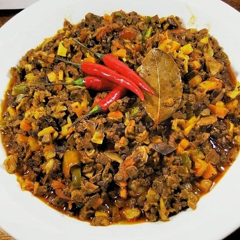

Ingredients
- 500g pork lungs and heart, boiled and finely chopped
- 1 onion, minced
- 4 cloves garlic, minced
- 1 red bell pepper, diced
- 2 tablespoons cooking oil
- 1/3 cup vinegar
- 2 tablespoons soy sauce
- 2 red chilies, chopped
- Salt and pepper to taste
Top 2 recipe
A bold Filipino dish made with finely chopped pork lungs and heart, cooked with garlic, onion, vinegar, and chilies for a spicy tangy bite.

Why I love it
Bopis stands out because it is savory, spicy, and tangy. It is the kind of dish that makes plain rice exciting.